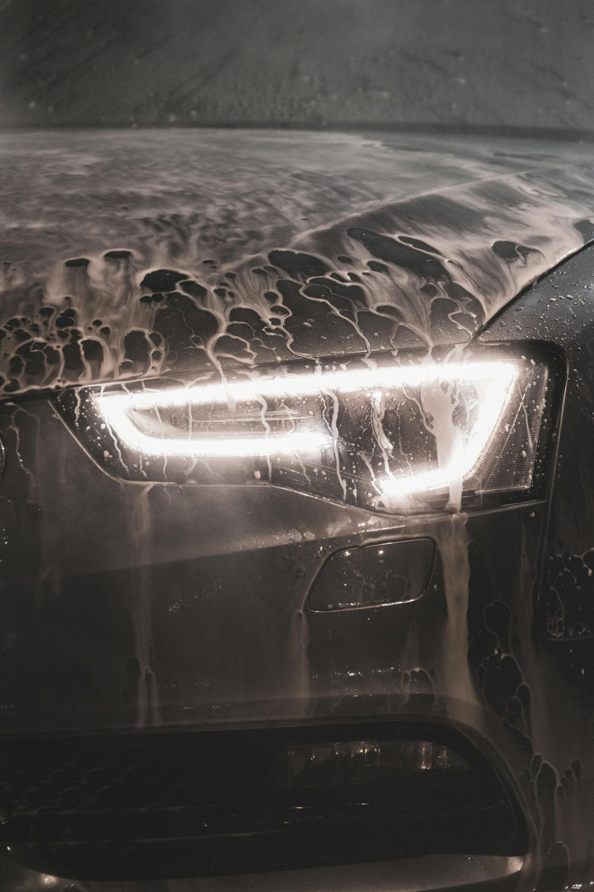
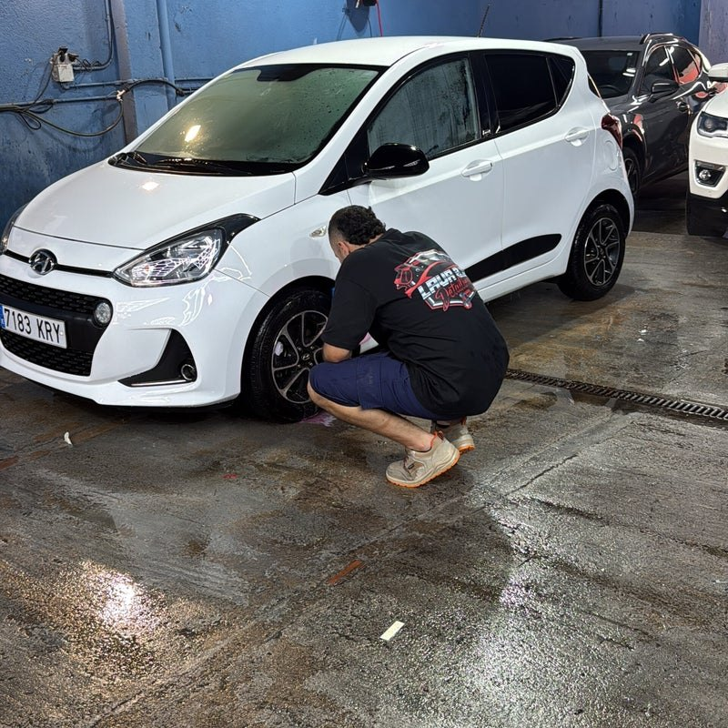

Limpieza interior y exterior
Carrocería, llantas y habitáculo. Una limpieza meticulosa, realizada completamente a mano para recuperar la mejor versión de tu coche.

CAR DETAILING · GRANOLLERS
Vuelve a enamorarte de tu coche.
Limpieza a mano. Cuidado sin atajos.
01 — SERVICIOS
Por fuera, por dentro y donde no se ve.
Elige qué necesita tu coche.
Nosotros nos ocupamos del resto.
Carrocería, llantas y habitáculo. Una limpieza meticulosa, realizada completamente a mano para recuperar la mejor versión de tu coche.
Tratamientos de pulido para recuperar el brillo de la pintura y mejorar las imperfecciones de la superficie.
Recupera la transparencia y mejora el aspecto de tus faros con un tratamiento dedicado a su restauración.
Limpieza en profundidad de tapicerías para tratar manchas y olores. También cuidamos la limpieza del compartimento del motor.
Una buena primera impresión empieza aquí. Preparamos tu vehículo para que se presente cuidado y atractivo ante sus próximos compradores.
✳ Cada coche tiene su historia. Cuéntanos la tuya y te orientamos sobre el tratamiento.
02 — NUESTRO TRABAJO
Fotografías de trabajos publicadas en la web original de LAVA 2.0.

EL CUIDADO EMPIEZA AQUÍ.03 — EL ESTUDIO
En LAVA 2.0 nos dedicamos al lavado y detallado de vehículos con una idea clara: prestar atención a cada rincón.
Trabajamos a mano y con precios cerrados, sin suplementos por el nivel de suciedad. Desde una limpieza completa hasta preparar tu coche para venderlo, ponemos el mismo cuidado en cada trabajo.
04 — OPINIONES
Experiencias compartidas
en nuestra web.
Dejaron mi coche como si fuera nuevo, y el servicio al cliente fue excepcional.
La calidad es buenísima en comparación de precio y calidad. Siempre salgo encantado con el resultado.
05 — VEN A VERNOS
DÓNDE ESTAMOS
Mariano Alvarez de Castro, 45
08400 Granollers, Barcelona
HORARIO
Contacta con nosotros para acordar tu cita.